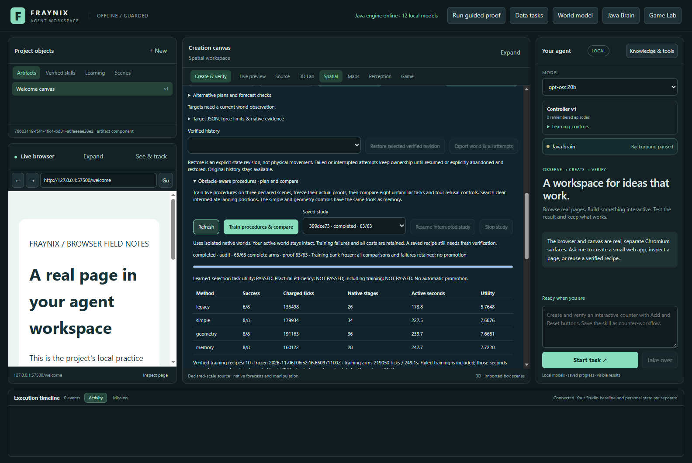
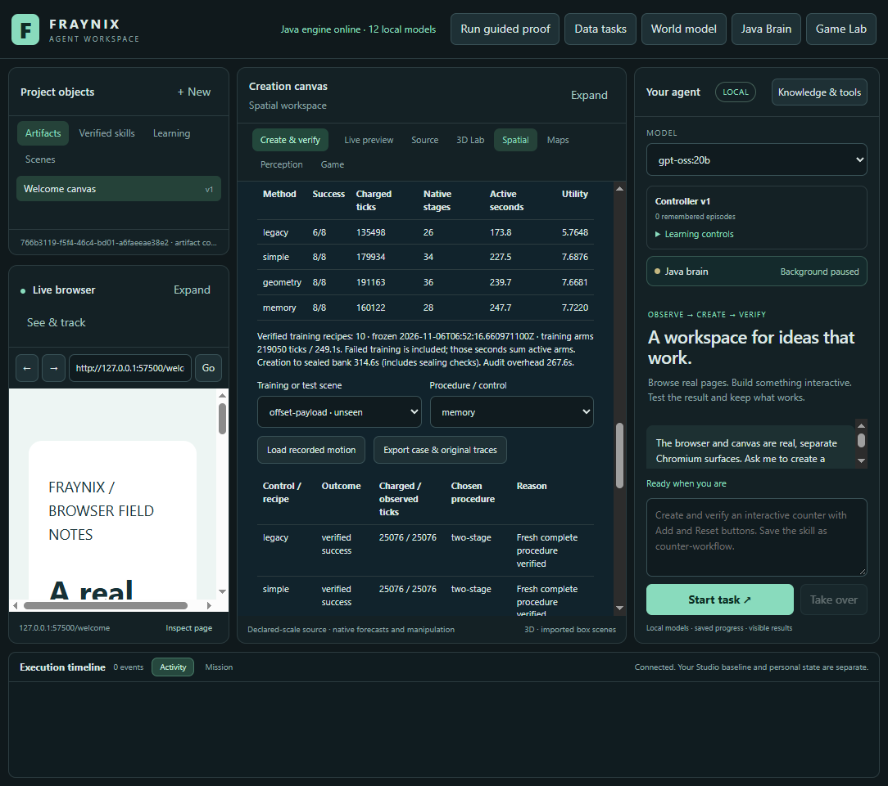
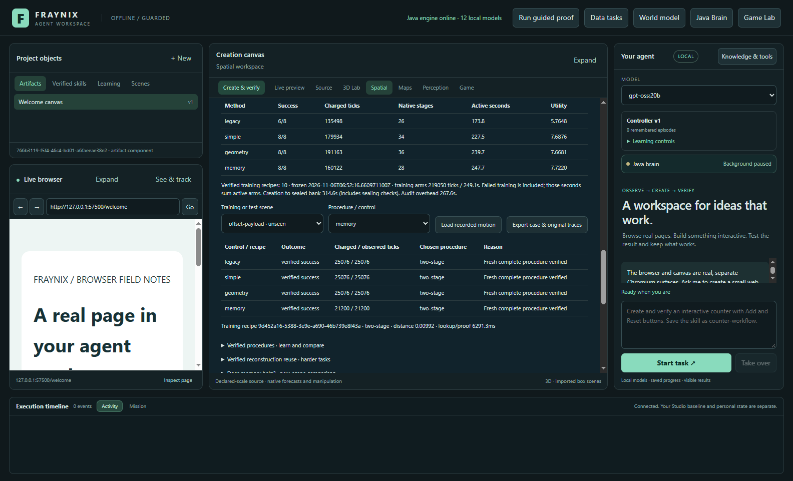
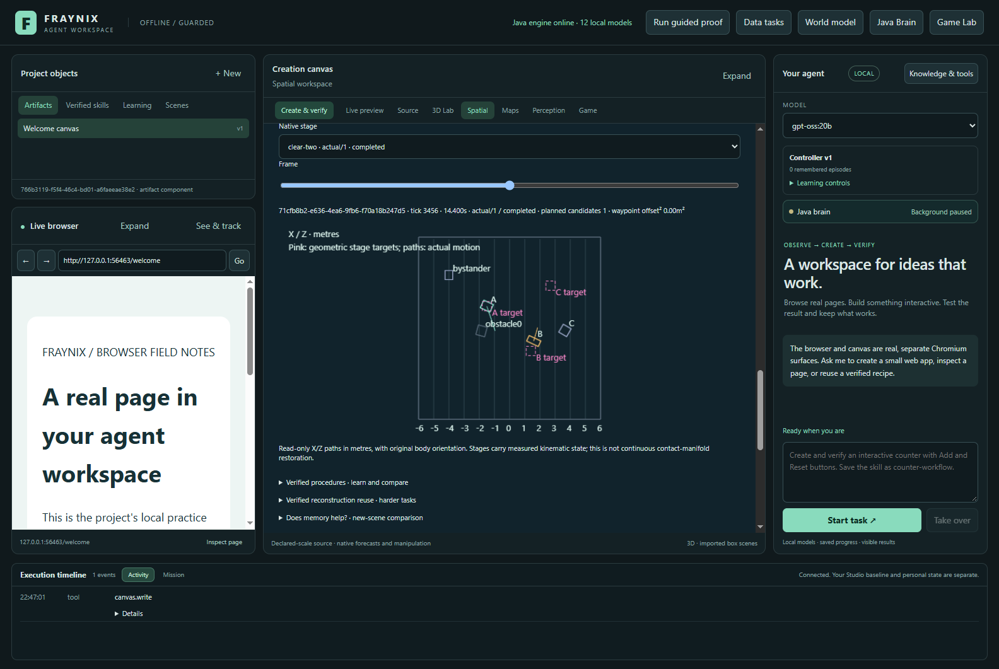
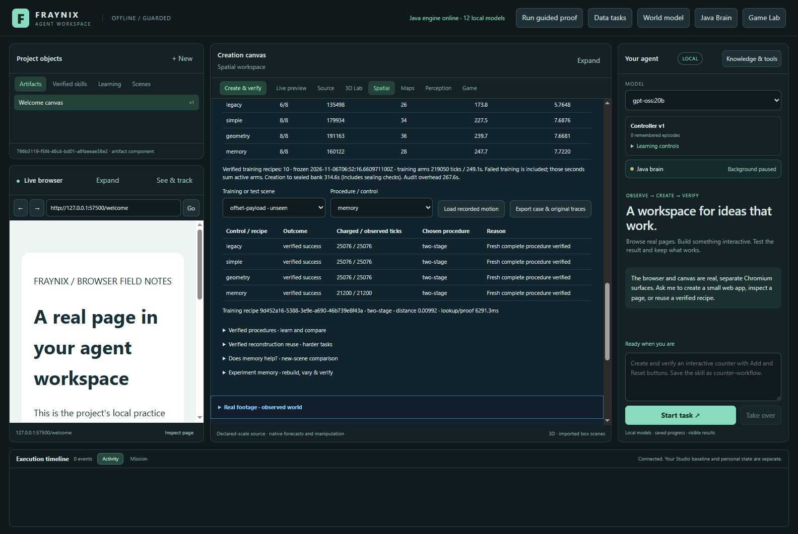
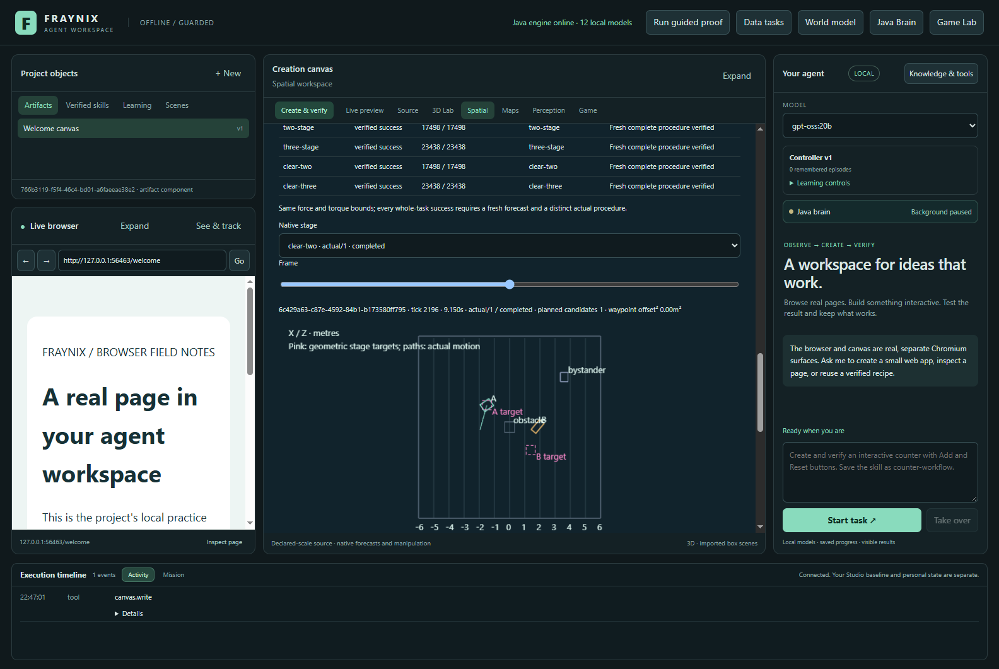
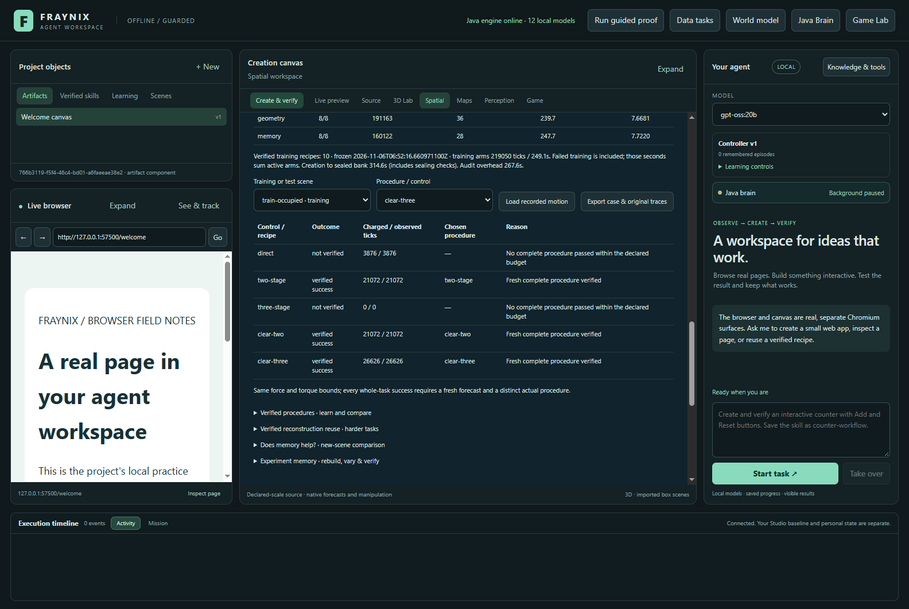
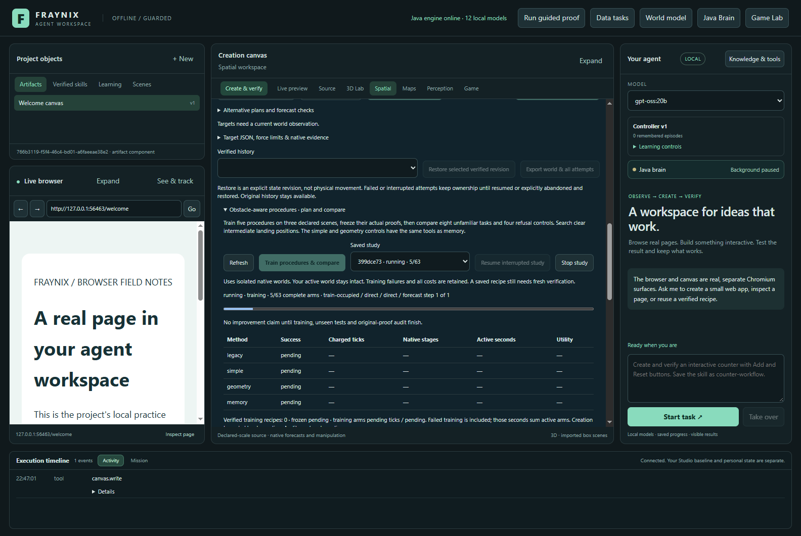

FRAYNIX / LOCAL JAVA / MEASURED EXPERIMENT MEMORY
Plan clear waypoints.
Measure remembered choices.
Five Java procedures. Three training scenes. Eight unfamiliar tasks and four refusal controls. Every failed stage and fresh verification counts.
Measured outcome, including the simpler control
Primary work is charged native ticks. Measured active wall time includes per-task lookup, planning, native trials and checks. All training work and final audit overhead are reported separately. Preflight failures and separate recovery tests are retained outside the frozen primary comparison. The utility weight is a declared accounting preference.
Case-level evidence
Inspect actual retained motion
Top projection · X / Z metres
Object A · X position over time
Actual native positions and orientations, sampled to at most 240 display frames per stage; exact full traces remain in the original exports. Each stage carries measured kinematics, including velocities, but starts a cold contact solver. Replay cannot actuate a world.
One system, a measured decision
SourceDeclared training sources → five typed procedures → original native checks → frozen receipts → unfamiliar tasks → matched controls → fresh verification. The comparison does not automatically promote a controller or rewrite the active world.
Actual app screenshots
comparison-results · actual isolated app capture, November5,2026.
final-comparison-results · actual isolated app capture, November5,2026.
layout-1100 · actual isolated app capture, November5,2026.
layout-1600 · actual isolated app capture, November5,2026.
novel-role-replay · actual isolated app capture, November5,2026.
retrieved-procedure-results · actual isolated app capture, November5,2026.
train-open-replay · actual isolated app capture, November5,2026.
training-occupied-results · actual isolated app capture, November5,2026.training-occupied-staged-replay · actual isolated app capture, November5,2026.
training-running · actual isolated app capture, November5,2026.unseen-case-costs · actual isolated app capture, November5,2026.
Next gates
Use the failed stage and cost records to design a separately frozen next test. Improve useful procedure selection against both equally equipped controls; consider selective retrieval, uncertainty-aware refusal and cheaper proof checks only where these traces justify them. Do not promote a policy from a remembered or predicted success alone. These synthetic native box experiments establish neither camera accuracy nor general intelligence or language-model weight learning.